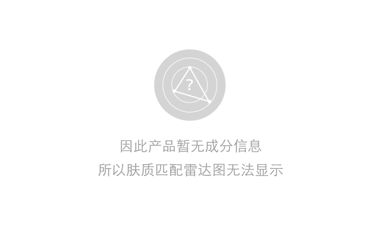

<!DOCTYPE html>
<head>
    <meta charset="utf-8">

     <script src="js/jquery-1.11.2.min.js"></script>
    <title>ECharts</title>
	<style>
		html,body{
			width:1000px;
			height:1000px;
			font-family:"微软雅黑";
		}
		.pic{
			width:100%;
			height:100%;
			text-align:center;
		}
		#abc{
			  width: 15%;
			  height: 15%;
			  position: relative;
			  top: 432px;
		}


	</style>
</head>

<body>
    <!-- 为ECharts准备一个具备大小（宽高）的Dom -->
    <div id="main" style="height:500px;width:500px;display:none">
    	
    </div>
    <div class="pic">
    	
    	<div style="clear:both"></div>
	</div>
	  <script src="http://echarts.baidu.com/build/dist/echarts.js"></script>
	  <script type="text/javascript">

		function getUrlParam(name)
		{
		var reg = new RegExp("(^|&)"+ name +"=([^&]*)(&|$)"); //构造一个含有目标参数的正则表达式对象
		var r = window.location.search.substr(1).match(reg);  //匹配目标参数
		if (r!=null) return unescape(r[2]); return null; //返回参数值
		} 
		var product_id = getUrlParam("pid")||"4392";
		if(product_id=="null"){
			product_id="4392";
		}
		var user_id = getUrlParam("uid")||"78";
		if(user_id=="null"){
			user_id="78";
		}

	  jQuery.support.cors = true;
	  var data={pid : product_id, uid : user_id};
	  var arrValue = [];

	  //get the data from match 
	  $.getJSON("http://120.27.30.130:8080/api/match", data, function(modelStr){
			$.each(modelStr.aspects,function(index,value){
					arrValue.push(value.value);
			});
			var title = modelStr.indexLabel;
			if(modelStr.productUserIndex == 0){
				var pichtml='';
					$(".pic").html(pichtml);
					return false;
			}
			
	/*		var matchNumber = modelStr.productUserIndex;
			var title = "";
			
		according to productUserIndex to change title 	
			if(matchNumber==0){
				var pichtml=''
				+'<p>因此产品暂无成分信息</p>'
				+'<p>所以肤质匹配雷达无法显示</p>';
				$(".pic").html(pichtml);
			}else if(matchNumber < 2){
				title="低";
			}else if(matchNumber<4){
				title="中";
			}else{
				title="高";
			}
			
		*/	  // 路径配置
	        require.config({
	            paths: {
	                echarts: 'http://echarts.baidu.com/build/dist'
	            }
	        });
			 require(
	            [
	                'echarts',
	                'echarts/chart/radar' 
	            ],
	            function (ec) {
	                // 基于准备好的dom，初始化echarts图表
	                var myChart = ec.init(document.getElementById('main')); 
	                
	         
					option = {
							 title: {
							        text: title,
							      
							        
							        x: 'center',
							        y: 'center',
							        itemGap: '0',
							        textStyle : {
							            color : 'rgba(30,144,255,0.8)',
							            fontFamily : '微软雅黑',
							            fontSize : 30,
							            fontWeight : ''
							        }
							 	},
						
					 //   legend: {
					 //       orient : 'vertical',
					 //       x : 'right',
					 //       y : 'bottom',
					 //       data:['用户1','用户2']
					 //   },
						toolbox: {
							show : false,
							feature : {
								mark : {show: true},
								dataView : {show: true, readOnly: false},
								restore : {show: true},
								saveAsImage : {show: true}
							}
						},
						type: 'circle',
						polar : [
						   {
							   indicator : [
								   { text: '功效:'+arrValue[0], max: 5.0},
								   { text: '成分:'+arrValue[1], max: 5.0},
								   { text: '口碑:'+arrValue[2], max: 5.0}
								],
								 name : {
									 	show:true,
									 	
						                formatter:null,
						                textStyle: {
						                	fontSize:18
						                	}
						            },
								type: 'circle',
								axisLine: {            // 坐标轴线
									show: false,        // 默认显示，属性show控制显示与否
									lineStyle: {       // 属性lineStyle控制线条样式
										color: 'blue',
										width: 1,
										type: 'solid'
									}
								},
								splitArea : {
									show : true,
									areaStyle : {
										color: ['white','rgb(250,250,250)']
									}
								},
								splitNumber: 5,
								splitLine : {
									show : true,
									lineStyle : {
										width : 1,
										color : '#efefe8'
									}
								}
							},
							
						],
						animation: false,
						calculable : true,
						series : [
							{
								name: '个性化详情',
								type: 'radar',
								data : [
									{
										value : arrValue,
										name : '个性化详情',
										itemStyle: {
											normal: {
												 color: (function (){
													var zrColor = require('zrender/tool/color');
												//	var x = document.getElementById('main').offsetWidth - 250;
													var grd=zrColor.getLinearGradient(
															150, 250,350,250,400,250
													)
													grd.addColorStop(0,'#734cdb'); 
													grd.addColorStop(0.5,'#ff3366');
													grd.addColorStop(1,'#52e3ac');
													 zrColor.fillStyle = grd;
													return grd;
												
												})()
											}
										}
									}
								]
							}
							
						]
					};
	                    
	        
	                // 为echarts对象加载数据 
	                myChart.setOption(option); 
	              //  alert(myChart.getDataURL());
	              var picHtml='';
	              $(".pic").html(picHtml);
	           //    $("#abc").attr("src", myChart.getDataURL());
	            }
	           
	            
	        );
			 
	  });
	
      

		

    </script>
 <!--       --> 
</body>